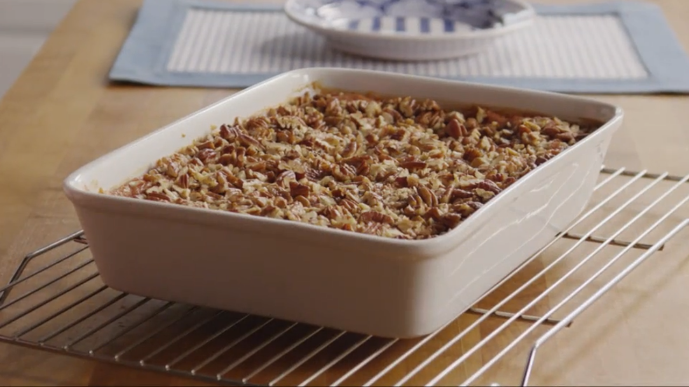

Dump Cake

Description
This dump cake is as easy as dumping ingredients in a pan! It's topped with crunchy walnuts and melted butter for a delicious dessert.
A dump cake is a cobbler-like dessert that features a cake-like topping. It gets its name from its easy method of preparation: The ingredients, one of which is boxed cake mix, are “dumped” in a cake pan without mixing.
Ingredients
- Pie filling: This dump cake recipe calls for cherry pie filling, but you can use whatever pie filling you like.
- Crushed pineapple: Two undrained cans of crushed pineapple (in 100% juice) lends fruity flavor and gives the dump cake a moist texture.
- Cake mix: A box of yellow cake mix is the convenient secret ingredient in this easy dump cake recipe.
- Walnuts: Chopped walnuts take the flavor and texture up a notch. Of course, you can leave them out if you prefer.
- Butter: Melted butter drizzled over the other ingredients makes the cherry dump cake nice, moist, and rich.
How To Make Dump Cake
- Stir the pie filling and pineapple together, then spread it an even layer in a cake pan.
- Sprinkle the cake mix and walnuts over the pineapple mixture.
- Drizzle the cake with butter and bake until golden brown.
Home